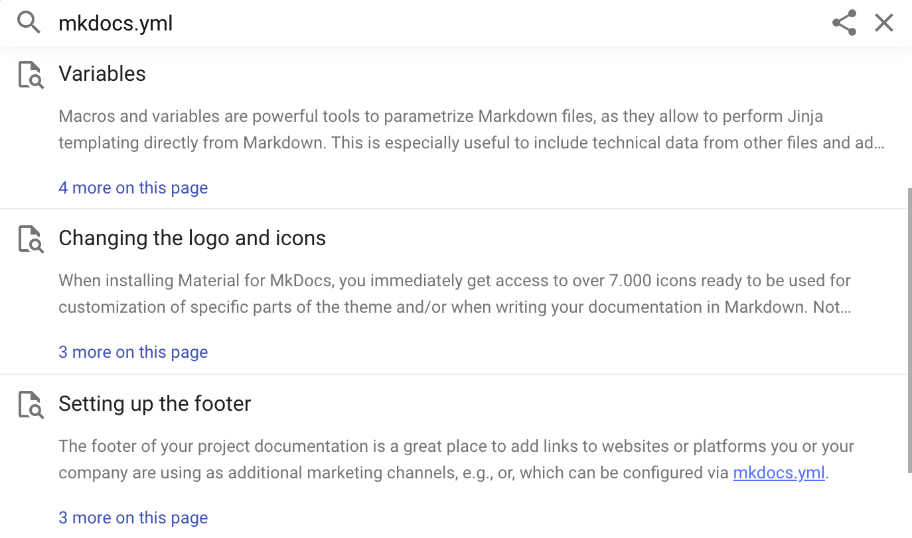

Search: better, faster, smaller¶
This is the story of how we managed to completely rebuild client-side search, delivering a significantly better user experience while making it faster and smaller at the same time.
The search of Material for MkDocs is by far one of its best and most-loved assets: multilingual, offline-capable, and most importantly: all client-side. It provides a solution to empower the users of your documentation to find what they're searching for instantly without the headache of managing additional servers. However, even though several iterations have been made, there's still some room for improvement, which is why we rebuilt the search plugin and integration from the ground up. This article shines some light on the internals of the new search, why it's much more powerful than the previous version, and what's about to come.
The next section discusses the architecture and issues of the current search implementation. If you immediately want to learn what's new, skip to the section just after that.
Architecture¶
Material for MkDocs uses lunr together with lunr-languages to implement its client-side search capabilities. When a documentation page is loaded and JavaScript is available, the search index as generated by the built-in search plugin during the build process is requested from the server:
const index$ = document.forms.namedItem("search")
? __search?.index || requestJSON<SearchIndex>(
new URL("search/search_index.json", config.base)
)
: NEVER
Search index¶
The search index includes a stripped-down version of all pages. Let's take a look at an example to understand precisely what the search index contains from the original Markdown file:
??? example "Expand to inspect example"
=== ":octicons-file-code-16: `docs/page.md`"
```` markdown
# Example
## Text
It's very easy to make some words **bold** and other words *italic*
with Markdown. You can even add [links](#), or even `code`:
```
if (isAwesome) {
return true
}
```
## Lists
Sometimes you want numbered lists:
1. One
2. Two
3. Three
Sometimes you want bullet points:
* Start a line with a star
* Profit!
````
=== ":octicons-codescan-16: `search_index.json`"
``` json
{
"config": {
"indexing": "full",
"lang": [
"en"
],
"min_search_length": 3,
"prebuild_index": false,
"separator": "[\\s\\-]+"
},
"docs": [
{
"location": "page/",
"title": "Example",
"text": "Example Text It's very easy to make some words bold and other words italic with Markdown. You can even add links , or even code : if (isAwesome) { return true } Lists Sometimes you want numbered lists: One Two Three Sometimes you want bullet points: Start a line with a star Profit!"
},
{
"location": "page/#example",
"title": "Example",
"text": ""
},
{
"location": "page/#text",
"title": "Text",
"text": "It's very easy to make some words bold and other words italic with Markdown. You can even add links , or even code : if (isAwesome) { return true }"
},
{
"location": "page/#lists",
"title": "Lists",
"text": "Sometimes you want numbered lists: One Two Three Sometimes you want bullet points: Start a line with a star Profit!"
}
]
}
```
If we inspect the search index, we immediately see several problems:
-
All content is included twice: the search index contains one entry with the entire contents of the page, and one entry for each section of the page, i.e., each block preceded by a headline or subheadline. This significantly contributes to the size of the search index.
-
All structure is lost: when the search index is built, all structural information like HTML tags and attributes are stripped from the content. While this approach works well for paragraphs and inline formatting, it might be problematic for lists and code blocks. An excerpt:
-
Context: for an untrained eye, the result can look like gibberish, as it's not immediately apparent what classifies as text and what as code. Furthermore, it's not clear that
Listsis a headline as it's merged with the code block before and the paragraph after it. -
Punctuation: inline elements like links that are immediately followed by punctuation are separated by whitespace (see
,and:in the excerpt). This is because all extracted text is joined with a whitespace character during the construction of the search index.
-
It's not difficult to see that it can be quite challenging to implement a good search experience for theme authors, which is why Material for MkDocs (up to now) did some monkey patching to be able to render slightly more meaningful search previews.
Search worker¶
The actual search functionality is implemented as part of a web worker1, which creates and manages the lunr search index. When search is initialized, the following steps are taken:
-
Linking sections with pages: The search index is parsed, and each section is linked to its parent page. The parent page itself is not indexed, as it would lead to duplicate results, so only the sections remain. Linking is necessary, as search results are grouped by page.
-
Tokenization: The
titleandtextvalues of each section are split into tokens by using theseparatoras configured inmkdocs.yml. Tokenization itself is carried out by lunr's default tokenizer, which doesn't allow for lookahead or separators spanning multiple characters.Why is this important and a big deal? We will see later how much more we can achieve with a tokenizer that is capable of separating strings with lookahead.
-
Indexing: As a final step, each section is indexed. When querying the index, if a search query includes one of the tokens as returned by step 2., the section is considered to be part of the search result and passed to the main thread.
Now, that's basically how the search worker operates. Sure, there's a little more magic involved, e.g., search results are post-processed and rescored to account for some shortcomings of lunr, but in general, this is how data gets into and out of the index.
Search previews¶
Users should be able to quickly scan and evaluate the relevance of a search result in the given context, which is why a concise summary with highlighted occurrences of the search terms found is an essential part of a great search experience.
This is where the current search preview generation falls short, as some of the search previews appear not to include any occurrence of any of the search terms. This was due to the fact that search previews were truncated after a maximum of 320 characters, as can be seen here:

The first two results look like they're not relevant, as they don't seem to include the query string the user just searched for. Yet, they are.
A better solution to this problem has been on the roadmap for a very, very long time, but in order to solve this once and for all, several factors need to be carefully considered:
-
Word boundaries: some themes2 for static site generators generate search previews by expanding the text left and right next to an occurrence, stopping at a whitespace character when enough words have been consumed. A preview might look like this:
While this may work for languages that use whitespace as a separator between words, it breaks down for languages like Japanese or Chinese3, as they have non-whitespace word boundaries and use dedicated segmenters to split strings into tokens.
-
Context-awareness: Although whitespace doesn't work for all languages, one could argue that it could be a good enough solution. Unfortunately, this is not necessarily true for code blocks, as the removal of whitespace might change meaning in some languages.
-
Structure: Preserving structural information is not a must, but apparently beneficial to build more meaningful search previews which allow for a quick evaluation of relevance. If a word occurrence is part of a code block, it should be rendered as a code block.
What's new?¶
After we built a solid understanding of the problem space and before we dive into the internals of our new search implementation to see which of the problems it already solves, a quick overview of what features and improvements it brings:
- Better: support for rich search previews, preserving the structural information of code blocks, inline code, and lists, so they are rendered as-is, as well as lookahead tokenization, more accurate highlighting, and improved stability of typeahead. Also, a slightly better UX.
- Faster and smaller: significant decrease in search index size of up to 48% due to improved extraction and construction techniques, resulting in a search experience that is up to 95% faster, which is particularly helpful for large documentation projects.
Rich search previews¶
As we rebuilt the search plugin from scratch, we reworked the construction of the search index to preserve the structural information of code blocks, inline code, as well as unordered and ordered lists. Using the example from the search index section, here's how it looks:
=== "Now"
![search preview now]
=== "Before"
![search preview before]
Now, code blocks are first-class citizens of search previews, and even inline code formatting is preserved. Let's take a look at the new structure of the search index to understand why:
??? example "Expand to inspect search index"
=== "Now"
``` json
{
...
"docs": [
{
"location": "page/",
"title": "Example",
"text": ""
},
{
"location": "page/#text",
"title": "Text",
"text": "<p>It's very easy to make some words bold and other words italic with Markdown. You can even add links, or even <code>code</code>:</p> <pre><code>if (isAwesome){\n return true\n}\n</code></pre>"
},
{
"location": "page/#lists",
"title": "Lists",
"text": "<p>Sometimes you want numbered lists:</p> <ol> <li>One</li> <li>Two</li> <li>Three</li> </ol> <p>Sometimes you want bullet points:</p> <ul> <li>Start a line with a star</li> <li>Profit!</li> </ul>"
}
]
}
```
=== "Before"
``` json
{
...
"docs": [
{
"location": "page/",
"title": "Example",
"text": "Example Text It's very easy to make some words bold and other words italic with Markdown. You can even add links , or even code : if (isAwesome) { return true } Lists Sometimes you want numbered lists: One Two Three Sometimes you want bullet points: Start a line with a star Profit!"
},
{
"location": "page/#example",
"title": "Example",
"text": ""
},
{
"location": "page/#text",
"title": "Text",
"text": "It's very easy to make some words bold and other words italic with Markdown. You can even add links , or even code : if (isAwesome) { return true }"
},
{
"location": "page/#lists",
"title": "Lists",
"text": "Sometimes you want numbered lists: One Two Three Sometimes you want bullet points: Start a line with a star Profit!"
}
]
}
```
If we inspect the search index again, we can see how the situation improved:
-
Content is included only once: the search index does not include the content of the page twice, as only the sections of a page are part of the search index. This leads to a significant reduction in size, fewer bytes to transfer, and a smaller search index.
-
Some structure is preserved: each section of the search index includes a small subset of HTML to provide the necessary structure to allow for more sophisticated search previews. Revisiting our example from before, let's look at an excerpt:
=== "Now"
``` html … links, or even <code>code</code>:</p> <pre><code>if (isAwesome){ … }\n</code></pre> ```=== "Before"
``` … links , or even code : if (isAwesome) { … } ```The punctuation issue is gone, as no additional whitespace is inserted, and the preserved markup yields additional context to make scanning search results more effective.
On to the next step in the process: tokenization.
Tokenizer lookahead¶
The default tokenizer of lunr uses a regular expression to split a given
string by matching each character against the separator as
defined in mkdocs.yml. This doesn't allow for more complex separators based
on lookahead or multiple characters.
Fortunately, our new search implementation provides an advanced tokenizer that doesn't have these shortcomings and supports more complex regular expressions. As a result, Material for MkDocs just changed its own separator configuration to the following value:
While the first part up to the first | contains a list of single control
characters at which the string should be split, the following three sections
explain the remainder of the regular expression.4
Case changes¶
Many programming languages use PascalCase or camelCase naming conventions.
When a user searches for the term case, it's quite natural to expect for
PascalCase and camelCase to show up. By adding the following match group to
the separator, this can now be achieved with ease:
This regular expression is a combination of a negative lookahead (\b, i.e.,
not a word boundary) and a positive lookahead ([A-Z][a-z], i.e., an uppercase
character followed by a lowercase character), and has the following behavior:
PascalCasePascal,CasecamelCasecamel,CaseUPPERCASEUPPERCASE
Searching for searchHighlight
now brings up the section discussing the search.highlight feature flag, which
also demonstrates that this now even works properly for search queries.5
Version numbers¶
Indexing version numbers is another problem that can be solved with a small
lookahead. Usually, . should be considered a separator to split words like
search.highlight. However, splitting version numbers at . will make them
undiscoverable. Thus, the following expression:
This regular expression matches a . only if not immediately followed by a
digit \d, which leaves version numbers discoverable. Searching for
7.2.6 brings up the 7.2.6 release notes.
HTML/XML tags¶
If your documentation includes HTML/XML code examples, you may want to allow
users to find specific tag names. Unfortunately, the < and > control
characters are encoded in code blocks as < and >. Now, adding the
following expression to the separator allows for just that:
We've only just begun to scratch the surface of the new possibilities tokenizer lookahead brings. If you found other useful expressions, you're invited to share them in the comment section.
Accurate highlighting¶
Highlighting is the last step in the process of search and involves the highlighting of all search term occurrences in a given search result. For a long time, highlighting was implemented through dynamically generated regular expressions.6
This approach has some problems with non-whitespace languages like Japanese or Chinese3 since it only works if the highlighted term is at a word boundary. However, Asian languages are tokenized using a dedicated segmenter, which cannot be modeled with regular expressions.
Now, as a direct result of the new tokenization approach, our new search implementation uses token positions for highlighting, making it exactly as powerful as tokenization:
-
Word boundaries: as the new highlighter uses token positions, word boundaries are equal to token boundaries. This means that more complex cases of tokenization (e.g., case changes, version numbers, HTML/XML tags), are now all highlighted accurately.
-
Context-awareness: as the new search index preserves some of the structural information of the original document, the content of a section is now divided into separate content blocks – paragraphs, code blocks, and lists.
Now, only the content blocks that actually contain occurrences of one of the search terms are considered for inclusion into the search preview. If a term only occurs in a code block, it's the code block that gets rendered, see, for example, the results of twitter.
Benchmarks¶
We conducted two benchmarks – one with the documentation of Material for MkDocs itself, and one with a very massive corpus of Markdown files with more than 800,000 words – a size most documentation projects will likely never reach:
| Before | Now | Relative | |
|---|---|---|---|
| Material for MkDocs | |||
| Index size | 573 kB | 335 kB | –42% |
Index size (gzip) |
105 kB | 78 kB | –27% |
| Indexing time7 | 265 ms | 177 ms | –34% |
| KJV Markdown8 | |||
| Index size | 8.2 MB | 4.4 MB | –47% |
Index size (gzip) |
2.3 MB | 1.2 MB | –48% |
| Indexing time | 2,700 ms | 1,390 ms | –48% |
Benchmark results
The results show that indexing time, which is the time that it takes to set up the search when the page is loaded, has dropped by up to 48%, which means the new search is up to 95% faster. This is a significant improvement, particularly relevant for large documentation projects.
While 1,3s still may sound like a long time, using the new client-side search together with instant loading only creates the search index on the initial page load. When navigating, the search index is preserved across pages, so the cost does only have to be paid once.
User interface¶
Additionally, some small improvements have been made, most prominently the more results on this page button, which now sticks to the top of the search result list when open. This enables the user to jump out of the list more quickly.
What's next?¶
Our new search implementation is a big improvement to Material for MkDocs. It solves some long-standing issues which needed to be tackled for years. Yet, it's only the start of a search experience that is going to get better and better. Next up:
-
Context-aware search summarization: currently, the first two matching content blocks are rendered as a search preview. With the new tokenization technique, we laid the groundwork for more sophisticated shortening and summarization methods, which we're tackling next.
-
User interface improvements: as we now gained full control over the search plugin, we can now add meaningful metadata to provide more context and a better experience. We'll explore some of those paths in the future.
If you've made it this far, thank you for your time and interest in Material for MkDocs! This is the first blog article that I decided to write after a short [Twitter survey] made me to. You're invited to leave a comment to share your experiences with the new search implementation.
-
Prior to , search was carried out in the main thread which locked up the browser, rendering it unusable. This problem was first reported in #904 and, after some back and forth, fixed and released in . ↩
-
At the time of writing, Just the Docs and Docusaurus use this method for generating search previews. Note that the latter also integrates with Algolia, which is a fully managed server-based solution. ↩
-
China and Japan are both within the top 5 countries of origin of users of Material for MkDocs. ↩↩
-
As a fun fact: the
separatordefault value of the search plugin being[\s\-]+always has been kind of irritating, as it suggests that multiple characters can be considered being a separator. However, the+is completely irrelevant, as regular expression groups involving multiple characters were never supported by lunr's default tokenizer. ↩ -
Previously, the search query was not correctly tokenized due to the way lunr treats wildcards, as it disables the pipeline for search terms that contain wildcards. In order to provide a good typeahead experience, Material for MkDocs adds wildcards to the end of each search term not explicitly preceded with
+or-, effectively disabling tokenization. ↩ -
Using the separator as defined in
mkdocs.yml, a regular expression was constructed that was trying to mimic the tokenizer. As an example, the search querysearch highlightwas transformed into the rather cumbersome regular expression(^|<separator>)(search|highlight), which only matches at word boundaries. ↩ -
Smallest value of ten distinct runs. ↩
-
We agnostically use KJV Markdown as a tool for testing to learn how Material for MkDocs behaves on large corpora, as it's a very large set of Markdown files with over 800k words. ↩